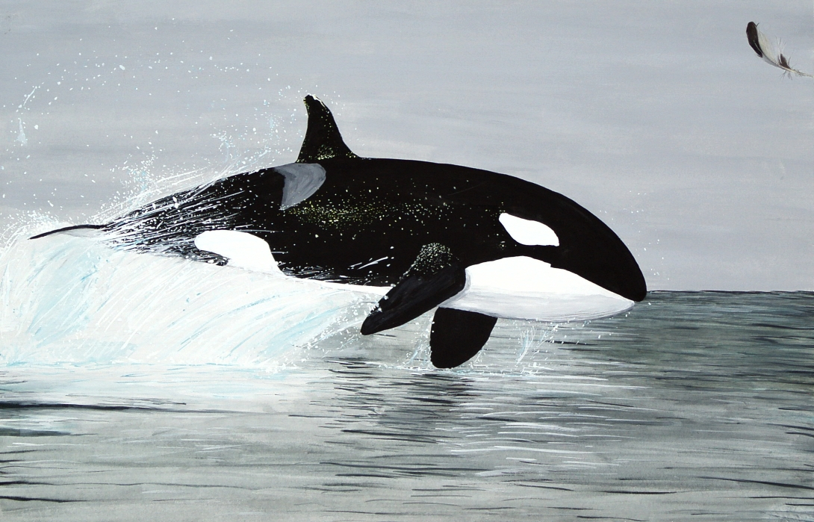
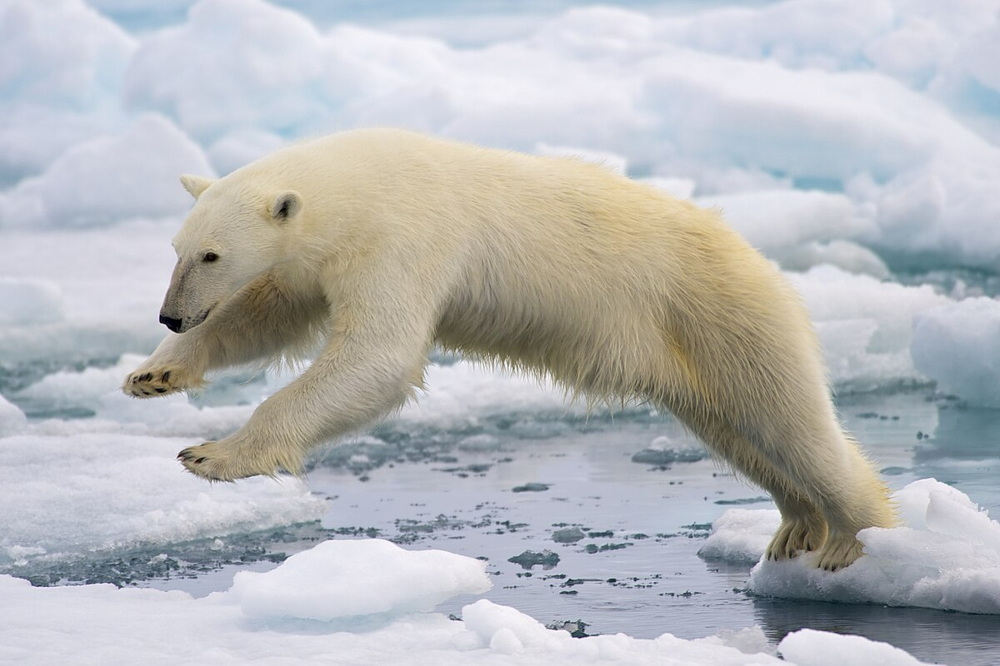
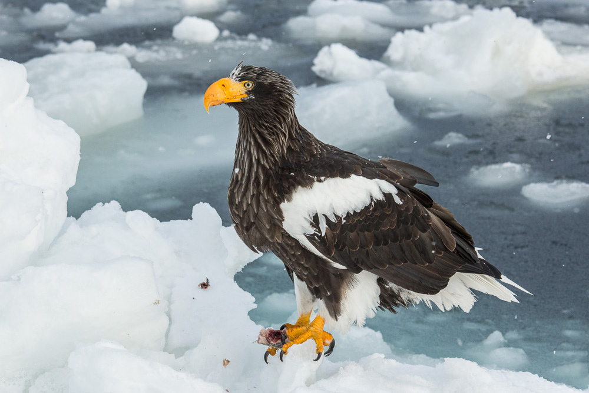

Kuzey Atlantik Canlıları
Kuzey Atlantik ve Arktik bölgelerdeki canlıları alt kategorilere göre keşfedin:
← Kuzey Atlantik ve Ekosistemi Anasayfa Sayfasına Dön

Deniz Canlıları

Kara Canlıları

Artic Kuşları